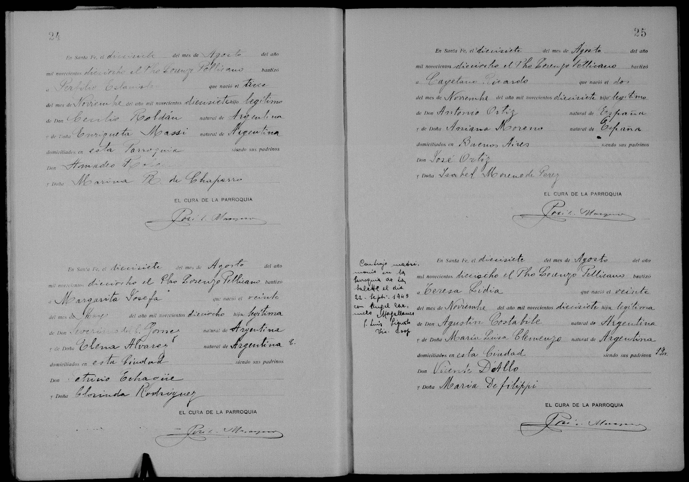

La historia
Teresa Lidia nació el 20 de noviembre de 1917 en la ciudad de Santa Fe, en plena etapa santafesina de la familia, y fue bautizada nueve meses después, el 17 de agosto de 1918, por el presbítero Lorenzo Pellicano (el formulario no nombra la parroquia: «domiciliados en esta Ciudad»). Sus padrinos fueron Vicente D'Allo y María Defilippi — nombres del círculo italiano de los Costabile.
El acta la declara «hija
legítima de Don Agustín Costabile, natural de Argentina, y de Doña María Luisa Clemenzo, natural de Argentina»: para la parroquia sus padres estaban casados al nacer ella, lo que fecha el matrimonio de Agustin Costabile × Maria Luisa Clemenzo antes de noviembre de 1917 — y revela que Agustín era argentino, no italiano de nacimiento: el «Agustín, el italiano» de la leyenda lo era por familia y apellido.
La
nota marginal del bautismo es el eslabón que faltaba de [[el-mito-clemenceau]]: «Contrajo matrimonio en la Parroquia de la Salette (lectura insegura) el día 22 Sept. 1943 con Ángel Carmelo Magallanes». La rama de Lucía Magallanes (Chubut), descendiente «de una María Luisa Clemenzo» y portadora de la versión más novelesca del mito, desciende casi con certeza de este matrimonio: su María Luisa es Maria Luisa Clemenzo.
De su vida posterior al casamiento no hay documentos en la colección; la tradición ubica a la descendencia Magallanes en Chubut.
Cronología
| Año | Fuente | Qué dice |
|---|---|---|
| 1917-11-20 | Acta de bautismo, Santa Fe (pág. 25) | Nace en Santa Fe; hija legítima de Agustín Costabile y María Luisa Clemenzo, ambos argentinos, «domiciliados en esta Ciudad» |
| 1918-08-17 | Acta de bautismo | La bautiza el Pbro. Lorenzo Pellicano; padrinos Vicente D'Allo y María Defilippi |
| 1943-09-22 | Nota marginal del bautismo + árbol | Casa con Ángel Carmelo Magallanes en la «Parroquia de la Salette» (lectura insegura), Santa Fe; oficia el P. Luis Pignolo (lectura insegura), Vic. Coop. |
Qué falta / hipótesis
La parroquia del bautismo no se nombra en el formulario, y en la nota marginal la del casamiento se lee
«de la Salette» con dudas (también es insegura la firma «P. Luis Pignolo»). Identificar la parroquia santafesina del Pbro. Lorenzo Pellicano en 1918 ubicaría además el barrio de la familia.
¿Dónde encaja
Lucía Magallanes en la línea? La descendencia Costabile→Magallanes ya está documentada por la nota marginal; falta saber de cuál hijo de Teresa y Ángel Carmelo desciende (¿Teresa era su abuela?), y cuándo la rama pasó a Chubut.
Líneas de investigación
- Buscar el acta de matrimonio Costabile × Magallanes (22-9-1943, ¿parroquia de la Salette?, Santa Fe) — daría la filiación de Ángel Carmelo
- Confirmar con Lucía Magallanes su posición exacta en la línea (¿Teresa Lidia era su abuela?)
- Buscar defunción de Teresa Lidia (¿Santa Fe? ¿Chubut?) y reconstruir la migración de la rama Magallanes a Chubut
- Identificar la parroquia del Pbro. Lorenzo Pellicano en Santa Fe, 1918
Fuentes
- Acta de bautismo, parroquia de Santa Fe sin identificar, 17-08-1918, pág. 25, con nota marginal del matrimonio de 1943 (imagen en su ficha)
Documentos
